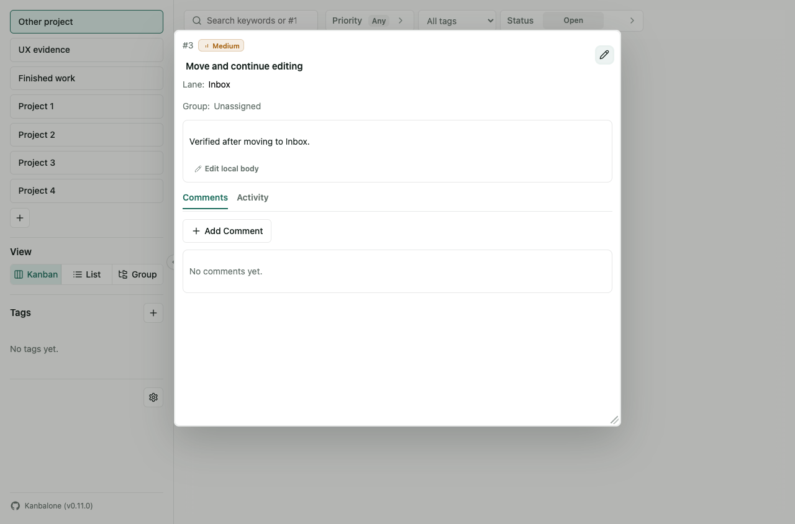
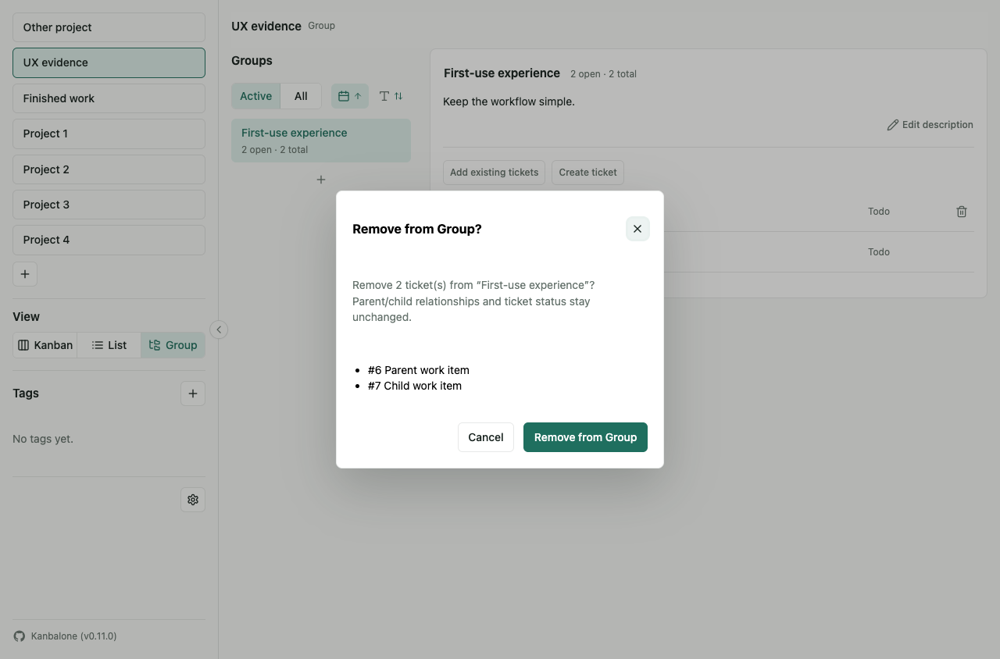

チケット別・改善前後のエビデンス
2026-11-21 · 改善前 v0.11.0 / 改善後 未コミット版 · 同一の検証データ・ライト表示。通常1280×844、#1480のみ650×844。画像をクリックすると原寸で開きます。
画像は実画面の無加工キャプチャです。#1482は固定応答による表示比較で、実GitHubの認証・取得成功を示しません。Export通知はダウンロード開始を示し、保存完了ではありません。
版・取得日時・画像ハッシュ・API再取得結果
#1474 一括Moveの初期ボード
操作：UX evidenceのListで全6件を選択しMoveを開く。
操作：チケット#3をOther project / InboxへMoveし、編集フォームを見る。
補足：move-persisted-after

#1477 Markdownチェック状態
操作：同じ本文の- [x]と- [ ]を詳細表示する。
改善前2項目とも通常の箇条書き。
改善後完了と未完了のチェック状態を表示。
#1478 Kanbanのブロッカー
操作：#1を未完了ブロッカーに持つ#2を見る。
#1480 狭い画面の主作業領域
操作：保存済み開閉設定なし。7ボード、650×844で再読込。
#1482 重複Importの既存チケット
操作：固定応答の隔離環境でexample/project#9をPreview。
#1483 Active対象なしの案内
操作：所属が全てアーカイブ済みのFinished workボードでGroup / Activeを見る。
#1485 Group間移し替えの案内
操作：親子2件を持つGroupでAdd existing ticketsを開く。解除確認も比較。
補足：group-remove-before

補足：group-remove-after
